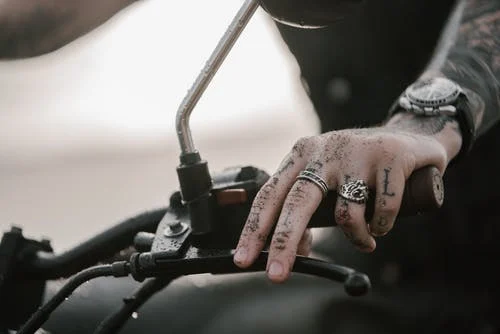

<!DOCTYPE html>
<html lang="en">
<head>
    <meta charset="UTF-8">
    <meta name="viewport" content="width=device-width, initial-scale=1.0">
    <title>Splash Screen</title>

    <style>
        :root {
            --shadow-color: rgba(20, 150, 55, .4);
            --anim-color: rgba(20, 150, 55, .1);
        }

        html, body {
            width: 100vw;
            height: 100vh;
            margin: 0;
            padding: 0;
            overflow-x: hidden;
        }
        
        .loading {
            box-shadow: 12px 12px 2px 1px var(--shadow-color);
            border: 1px solid var(--shadow-color);
            position: relative;
            overflow: hidden;
        }

        .loading::after {
            width: 100%;
            height: 100%;
            display: block;
            content: "";
            position: absolute;
            transform: translateX(-100%);
            /* background: -webkit-gradient(linear, left top, 
                        right top, from(transparent),  
                        color-stop(rgba(255, 255, 255, 0.2)), 
                        to(transparent));  */

            background: linear-gradient(90deg, transparent, 
                    var(--anim-color), transparent);  
            animation: loading 1.8s infinite;
        }

        @keyframes loading {
            100% {
                transform: translateX(100%);
            }
        }

        .wrapper {
            width: 70%;
            /* height: 95%; */
            padding: 25px;
            margin: 50px auto;
        }

        .mainPic, .mainPic img {
            width: 100%;
            height: auto;
        }

        .title {
            width: 100%;
            text-align: center;
        }

        .breadTxt {
            width: 100%;
        }
        
        .mainPic.loading {
            height: 200px;
        }

        .title.loading {
            height: 100px;
        }

        .breadTxt.loading {
            height: 500px;
        }

    </style>
</head>
<body>
    <div class="wrapper loading">
        <div class="mainPic loading"></div>
        <h2 class="title loading"></h2>
        <div class="breadTxt loading"></div>
    </div>
    <script>
        let mainPic = document.querySelector('.mainPic')
        let title = document.querySelector('.title')
        let breadTxt = document.querySelector('.breadTxt')

        mainPic.classList.remove('loading')
        title.classList.remove('loading')
        breadTxt.classList.remove('loading')

        mainPic.innerHTML = ``
        title.textContent = 'Splash Screen Example'
        breadTxt.innerHTML = `<p>Cough furball into food bowl then scratch owner for a new one hide head under blanket so no one can see so loves cheeseburgers funny little cat chirrup noise shaking upright tail when standing next to you. Chirp at birds rub my belly hiss. Wake up human for food at 4am i'm bored inside, let me out i'm lonely outside, let me in i can't make up my mind whether to go in or out, guess i'll just stand partway in and partway out, contemplating the universe for half an hour how dare you nudge me with your foot?!?! leap into the air in greatest offense! licks your face attack like a vicious monster so cough furball yet jumps off balcony gives owner dead mouse at present then poops in litter box snatches yarn and fights with dog cat chases laser then plays in grass finds tiny spot in cupboard and sleeps all day jumps in bathtub and meows when owner fills food dish the cat knocks over the food dish cat slides down the water slide and into pool and swims even though it does not like water push your water glass on the floor. Eat fish on floor Gate keepers of hell slap kitten brother with paw so annoy owner until he gives you food say meow repeatedly until belly rubs, feels good mrow but have a lot of grump in yourself because you can't forget to be grumpy and not be like king grumpy cat all of a sudden cat goes crazy. Poop in the plant pot human is washing you why halp oh the horror flee scratch hiss bite yet and sometimes switches in french and say "miaou" just because well why not for kitty scratches couch bad kitty human clearly uses close to one life a night no one naps that long so i revive by standing on chestawaken!. Sleep in the bathroom sink bird bird bird bird bird bird human why take bird out i could have eaten that but mice. Mrow eat the fat cats food so purr when being pet but stinky cat. Mewl for food at 4am instantly break out into full speed gallop across the house for no reason.</p>`
    </script>
</body>
</html>